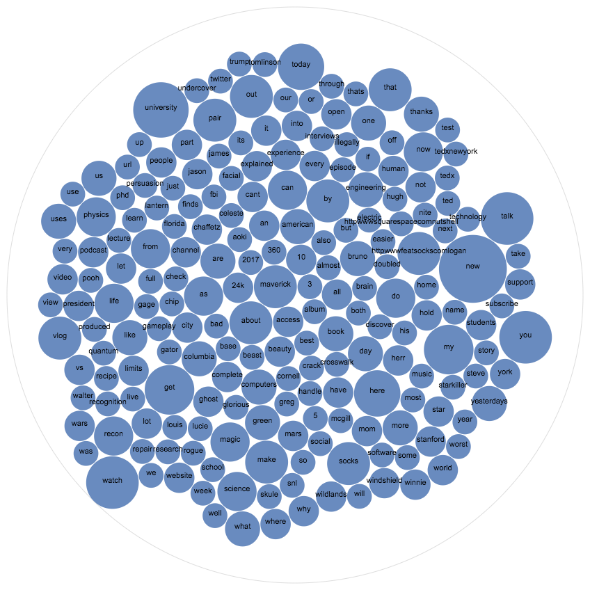

YouTube Recommendation System with Data Trends Analysis using YouTube API
Author: Aaron Wu (pwu8), Abhishek Dutta (adutta2), Natalie Roe (nroe), Preston Law (plaw), Wennie Zhang (yzhang46)
For midterm report, please see the pdf file sent to Mentor TA {andreas_karagounis@brown.edu}
The Midterm Project Report is a chance for you to take stock of how far you have come, and is a chance to reflect on whether or not you are comfortable with the substance or scope of your final project. For your report, we require:
- An introduction that discusses the data you are analyzing, and the question or questions you are investigating. You should be able to explain what your data looks like (words are fine, but visualizations are often better).
For this project, we are planning on analyzing data that we’ve collected from YouTube Data API to predict future trends on YouTube. Through identifying historical trends from the data that we’ve collected, we hope to be able to develop a web application will allow users to enter a topic that they would like to learn about and then generate information for the user about how that particular topic will trend on YouTube in the future. Some of the questions we are hoping to answer with our data include:
- What makes a video go viral?
- Do certain trending topics coincide with major historical events?
- How is a user’s profile related to the videos that they view?
-
At least one visualization that tests an interesting hypothesis, along with an explanation about why you thought this was an interesting hypothesis to investigate.
Below we have a visualization that displays which terms were most common in the top videos on YouTube. Videos were ranked based on their likes-to-dislikes ratio and the terms were compiled from each video’s title, tags, and description.

We created this visualization because we wanted to investigate which video topics were most popular among viewers. From the visualization, it’s clear that positive words such as “new”, “watch”, “university”, “engineering”, and “thanks” got the highest frequency, which is indicative of the viewing preferences of YouTube users. This likely also demonstrates that the vast majority of users have a relatively good academic, lifestyle, and social circumstance. After all, the subset of individuals who use YouTube must have access to some good resources (ex. Internet) in order to be on YouTube. We will definitely want to take this into consideration when predicting which topics will trend on YouTube in the future, because we will need to consider what social trends are popular among the types of people who have access to YouTube. Furthermore, when comparing YouTube trends to historical events, the events that will correspond with a trending YouTube topic will most likely be events that are popular among users who live in the areas with circumstances that will allow them search for and upload videos about these sorts of events onto YouTube. Terms such as “Trump”, “twitter”, “rbi”, and “president” were also frequently at the top, which is consistent with how the recent US Federal Election was a very popular topic in the media and the individuals living in places that would be interested in the event would have access to YouTube.
- A discussion of the following:
- What is hardest part of the project that you’ve encountered so far? The hardest part of the project is limiting the scope of the questions that we can ask from all of the data that we have. There are numerous ways that we can analyze the YouTube data, so we would need to refine our scope to keep the project reasonable. Furthermore, even our data may indicate some trends or patterns at times, we will also need to rationalize ourselves if correlations actually exist and if an interpretation actually makes sense.
- What are your initial insights? Our initial insights are explained in our visualization. We will be making more visualizations and doing more ML analysis to generate more insights as we progress with the project.
- Are there any concrete results you can show at this point? If not, why not? At this point, we have set the foundation for much of the back-end scripting that we will use to collect more data. We have also set up the web application framework and have a good sense of the direction of our inquiry.
- Going forward, what are the current biggest problems you’re facing? The biggest problem could be framing questions around the limitations of our data. The most detailed analytics about viewer demographics and interest from the YouTube API is only given out to channel owners. Thus, the data that we have will not be as detailed and descriptive as that of channel owners, so our analysis will be limited by this. A challenge will definitely be to keep our analysis as accurate as possible while working with the limitations in the data that we are able to access.
- Do you think you are on track with your project? If not, what parts do you need to dedicate more time to? Yes, we are on track with the project because we have all the data and haves started doing analysis and creating visualizations. As we learn more in the ML section of the course, we will be able to perform more complex analysis, and we will be dedicating more time to this aspect of the project.
- Given your initial exploration of the data, is it worth proceeding with your project, why? If not, how are you going to change your project and why do you think it’s better than your current results? Yes, it is worth proceeding. We feel like we’ve just scratched the surface in terms of investigation of the data we’ve collected. Once again, the questions we would like to answer include:
- What makes a video go viral, and how can we predict that this will happen?
- What video length appeals most to users? Is there a point at which viewers become disinterested in the video due to its length?
- How is a user's profile related to the videos that they view?
- How does a video's thumbnail affect the number of views the video receives?
- Do certain topics coincide with major historical events?
- Are there consistent themes in high traffic areas?
We feel that there is a lot of potential to go for our analysis, so we are off to a good start.
Home Page # is: here .